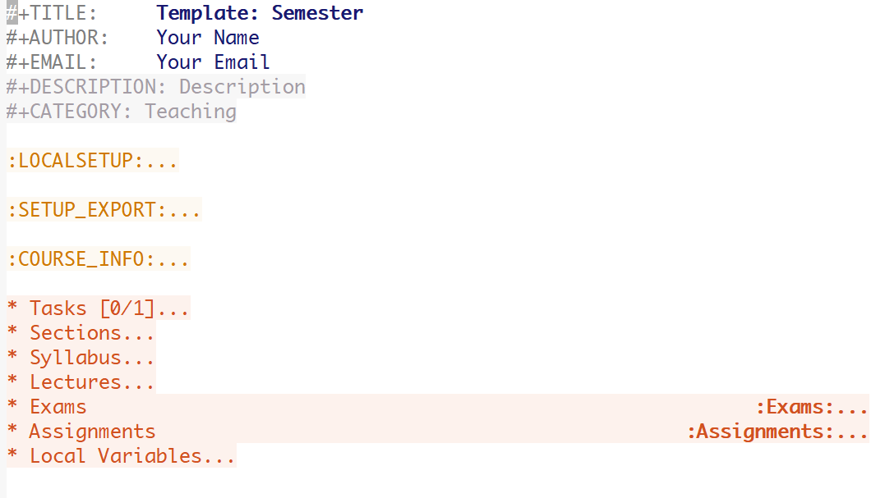
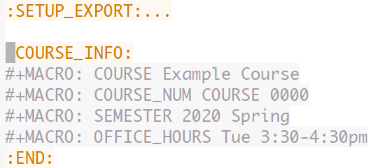
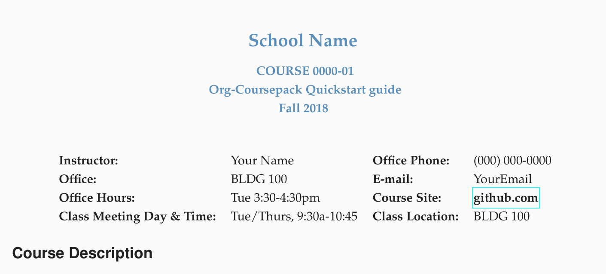
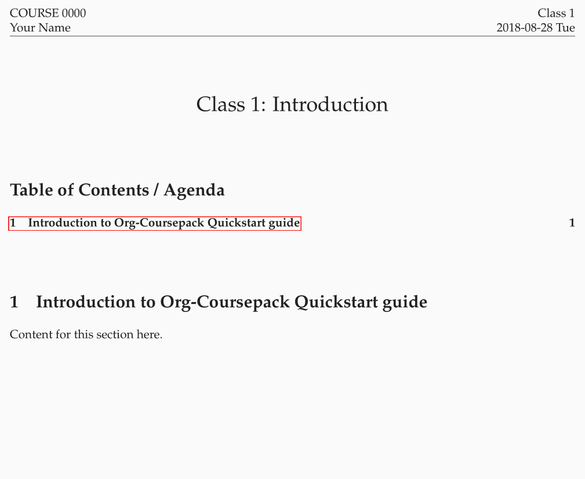
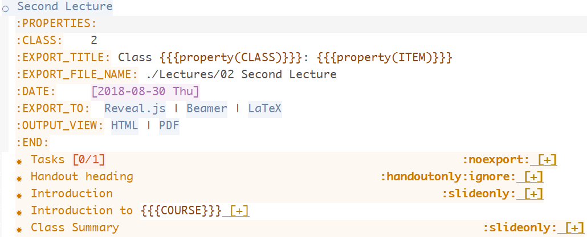
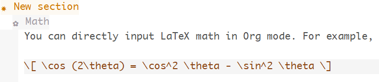

Class 1: Introduction¶
ORG 0000 Joon H. Ro & Jae-Eun Namkoong Class 1 [2018-08-28 Tue]
1 Introduction to Org-Coursepack¶
The Org-Coursepack provides a template for developing and managing teaching materials using Org mode, a major mode in GNU Emacs.
1.1 Advantages for Instructors¶
- First, Org mode and modular design allow for more effective and efficient
content creation.
- Content updates get propagated across courses, semesters, and sections, minimizing the potential for inconsistencies
- Minimizes redundancy when sharing content across courses, semesters, and sections
- Second, instructors can enjoy the benefits of having a flexible export system and an output-specific export option.
- Consistent content across multiple output formats
- Slides (e.g., via reveal.js or Beamer backends)
- Handouts (e.g., via the LaTeX or reStructuredText backends)
- Selective formatting and presentation of components depending on output format
- Consistent content across multiple output formats
- Third, the template contains a) utility functions written in Emacs Lisp, b)
shortcuts to Org mode functions, and c) pre-built tree structures, which
allow automation of many tasks including:
- Automatic class numbering
- Automatic creation of key content including (but not limited to)
- course schedule for syllabi;
- agenda of lecture materials; and
- exam keys.
1.2 Advantages for Students¶
- Consistent, properly-formatted, and strategically presented course materials add to student engagement
- Availability of materials that are easier to digest and review outside the classroom
1.3 Requirements¶
Org-Coursepack is a tool based on Org mode, a major mode in GNU Emacs. It does not, however, require extensive previous experience with either, unless the user wants to make changes to pre-built scripts. Only the following basic knowledge is needed:
- Emacs
Text editing using Emacs
- Org mode
Org mode markup syntax. Org mode uses a straightforward markup language similar to Markdown and reStructuredText, and thus, it will be easy to learn for any user who is familiar with other markup languages.
2 Quickstart Guide¶
This quickstart guide will show you, step-by-step, how to create your course
with Org-Coursepack. We focus on creating syllabi and lectures,
as they typically make up the majority of course content. Other course materials, such as
assignments and exams, can be created in similar ways.
2.2 Copy and rename the Template directory and Org file¶
The quickstart guide uses / to refer the root path of Org-Coursepack. Make
a copy of the Template directory (inside the /Courses directory). Change
the names of the Template directory and the Course Template.org file
inside the directory, so they reflect the name of the course you are creating
the materials for. See example below (we changed the names to Example Course):
It is common for the same course to be taught across multiple
semesters. Hence, the course will include a Semester folder for each
semester it is taught. This folder includes a semester Org file, which is used
to pull and organize modular course materials that can be used across courses
and/or semesters. The semester Org file can also contain semester-specific
content, such as class dates, classroom information, or office hours. The
semester Org file is used to export course content into appropriate output
formats (e.g., slides or handouts).
The example below shows that the semester is 2020 Spring. You can rename the
Semester Template folder and the Semester Template.org inside that folder
to reflect the semester in which you are teaching that course.
2.3 Set local variables permissions in the semester Org file¶
When you open 2020 Spring.org for the first time, it will
show you the following warning about local variables:
The local variables list in 2020 Spring.org
contains values that may not be safe (*), and variables that are risky (**)
Do you want to apply it? You can type
y -- to apply the local variables list.
n -- to ignore the local variables list.
! -- to apply the local variables list, and permanently mark these
values (*) as safe (in the future, they will be set automatically.)
This warning asks what you would like to do about the pre-set options
contained in the file. For example, the option
org-confirm-elisp-link-function is currently set to nil, which means that,
when links containing Emacs scripts are clicked (e.g., for exporting), Emacs
will not ask for your confirmation before the action is taken. You can type
! to permanently set these options.
When the file is open, you will see the template for constructing a course for this semester:
You can freely move the cursor around using the arrow keys. Many items such as
such as drawers (e.g., :LOCALSETUP:) and subtrees (e.g., * Sections) are
collapsible, and they are annotated with ... when collapsed. A collapsible
item under the cursor can be expanded and collapsed by pressing the Tab key:
2.4 Rename paths to semester and course Org files specified in #+INCLUDE statements¶
The semester Org file has #+INCLUDE statements, which are used to pull
content from other Org files (e.g., course Org file or other sections of the
same semester Org file). The #+INCLUDE statements specify the paths to the
Org files from which content are pulled. These paths should be renamed so the
#+INCLUDE statements work properly.
Specifically, you should replace two file names in these paths.
First, replace all occurrences of Semester Template.org with the name of your
semester Org file (in the case of our example, 2020 Spring.org).
You can use the search-and-replace feature in Emacs by pressing M-%
(Alt+Shift+5) or via Edit -> Replace -> Replace String menu),
inputting /Semester Template.org<Enter> followed by /2020 Spring.org<Enter>, and
pressing ! (replace all). Emacs will let you know how many replaces has been
made.
The replace query will look like the following:
Query replace Semester Template.org with: 2020 Spring.org
As shown below, all occurrences of Semester Template.org are replaced by 2020 Spring.org:
Repeat the same process for the template Org file. That is, replace
Course Template.org with the name of your course Org file.
Query replace Course Template.org with: Example Course.org
As shown below, Course Template.org is replaced by Example Course.org:
2.5 Inputting course information¶
The first few lines of the semester Org file (see 2020 Spring.org) contain
the file metadata, such as the #+TITLE: and #+DESCRIPTION: of the
file. Expanding the :COURSE_INFO: drawer will reveal several macros which
have the course metadata; the COURSE macro is for specifying the
name of the course, COURSE_NUM is for specifying the course ID, and so
on. They currently have filler values as shown in the image below.
You can fill the macro values with your own course information as shown in the image below.
2.6 Preparing your syllabus¶
To reduce reduncancy, the top level * Syllabus tree simply pulls information
from the course Org file (for course-related information common across
sections and semesters; e.g., course description), the semester Org file (for
semester-specific information; e.g., academic year or office hours), and
section-level macros (which contain section-specific information; e.g., class
time and location).
2 Syllabus Top-level Tree of the documentation contains detailed information about how to change syllabus content to fit your own course.
Here, we show how to use a simple command to automatically generate/update a
class schedule from the list of classes and their metadata in the * Lectures* top-level tree in the semester Org file, and how to export your
syllabi.
2.6.1 Class schedule¶
You can include in your syllabus a class schedule, which is a table that shows
a list of class dates, class numbers, and class titles, as well as exam dates
and assignment due dates. Navigate to the
* Syllabus/Class Schedule subtree and place your cursor on the line that
starts with #+BEGIN: columnview. You can view the class schedule by
expanding the columnview (see example class schedule below).
Then, with the curser in place, press C-c C-c (hit c twice while holding
down the CTRL key) to generate/update the class schedule with the most
recent information. Any changes made to the order or names of classes will
automatically be reflected when the instructor updates the class schedule with
the C-c C-c command.
2.6.2 Exporting a syllabus¶
Syllabus exporting occurs at the Syllabus subtree under each section’s
subtree (e.g, * Sections/01/Syllabus) to enable passing on section-specific
information through macros, which are defined in :PROPERTIES: and
:MACROS_Section_Info: drawers of the section subtree (see the example
below).
To export the syllabus in our example, navigate to the * Sections/01/Syllabus subtree, then expand the :PROPERTIES: drawer. When the
drawer is expanded, you will see a clickable link named LaTeX (see image
below). First, make sure to save your file so all your changes are written to
the disk. Then, clicking this link will export the syllabus for Section 1 to a
PDF file using LaTeX. You can find the exported file in the Syllabus
sub-directory. You can also click the PDF link in the same :PROPERTIES:
drawer (see image below) to open the exported file.
See the screenshot of the exported syllabus below.
2.7 Preparing your lectures¶
The Quickstart guide will begin by introducing the exporting functions to help beginners visualize the lecture slides and handouts generated with the Org-Coursepack.
2.7.1 Exporting slides and handouts¶
Each lecture subtree, in its :PROPERTIES: drawer, has clickable links for export functions (see image below). The reveal.js link is for exporting the lecture to html reveal.js slides. The LaTeX link is for exporting the lecture to a document-like handout (as opposed to scaled-down slides) in a PDF file format. Clicking the HTML and PDF links will open the corresponding exported file.
The exported files can be located in the Lectures sub-directory of the semester folder.
The following image shows an example of an exported html reveal.js slides (the slide overview portion).
The image below shows an example of an exported PDF handout.
As you can see, class materials under subtrees with the slideonly (handoutonly) tag are not
exported in the LaTeX (reveal.js) output. The tags allow you to specify materials you
want to show only in lecture slides and not in handouts (e.g., in-class announcements) or only in handouts and not in lecture slides (e.g., supplementary information about a topic).
See Exporting Slides and Handouts for more information about exporting lectures.
2.7.2 Adding new classes/lectures and updating their metadata¶
The example * Lectures tree, as shown below, has only one lecture (i.e., Course Introduction). Lets try adding two additional lectures. (Note that subtrees with the skipcount tag are not actual lectures–they are either subtrees with auxiliary
information, such as class dates and instructor’s tasks, or subtrees for non-lecture events such as
assignment due dates and holidays.)
To add two additional lectures, copy and paste the Course Introduction
subtree twice. Then, change the names of the two additional lecture subtrees. In the example, we will simply
call them Second Lecture and Third Lecture:
Expanding the :PROPERTIES: drawer of each lecture (e.g., Second Lecture) will reveal class-related metadata, such as CLASS, EXPORT_FILE_NAME, and DATE.
You can automatically update these values by running the Update lecture metadata script.
The script is located right under the Lectures subtree headline (see image below)–to run the script, simply move the curser to the script and type C-c C-c.
When asked to confirm (see image below), press y.
In addition, you will need to press Shift+Tab to reset the rendering.
As shown in the image below, you should be able to see that the lecture metadata have been updated.
As explained earlier, you can update the class schedule in the syllabus with the new lecture metadata.
2.7.3 Creating modular content¶
One of the biggest advantages of using the Org-Coursepack is that instructors can leverage Org mode’s flexible inclusion
functionality when developing course materials. Course materials that are stored in topic Org files can be pulled into semester Org files using the #+INCLUDE: statement to construct lectures (see example below).
This modular approach reduces redundancy and makes it easier to manage and update course materials. For example, any improvements made to a content can be automatically applied to all courses pulling that content. This approach is optional–instructors can also choose to put all course materials directly into a semester Org file. See the Lectures part of the documentation for more details.
2.7.4 Editing lecture content¶
Let’s add content to a lecture. Any lecture content (e.g., Focus Groups) will belong to a topic subtree (e.g., Types of Qualitative Research Methods). In the example shown below, we simply added a New topic subtree at the same
level as other topic subtrees (i.e., \*\*\* New topic).
When creating content under the topic subtree, you can freely use Org markup language, which is similar to other popular markup languages such as Markdown and reStructuredText. The Quickstart Guide shows several basic examples. For more detailed instructions, see the Creating Content for Slides and Handouts section of the documentation. You can also see Org manual.
Lists. Org mode uses a typical syntax (- or + for lists, 1. for numbered lists) for
lists. For example,
Math. you can directly input LaTeX math in Org mode. For example,
In reveal.js slides, math will be rendered with MathJax.
Slide split. Lecture content are automatically divided into different slides following the structure
of the lecture subtree (e.g., content for a new topic will be presented in a new set of slides). An instructor can also force a new slide by inserting #+REVEAL: split into a desired location. For example,

Fragmented contents. Fragmented contents (e.g., items in a listing being presented one after another) can be
specified by putting #+ATTR_REVEAL: :frag (appear) before the contents that are to be fragmented. For example:

Images. Prepending file: to an image file path will include a
local image to both lecture slides and handout. We recommend using a relative path
(../../../Assets/Images/) is recommended for portability.
To adjust the size of the image, specify HTML attributes (e.g., #+ATTR_HTML: :width 80%) or LaTeX attributes
(e.g., #+ATTR_LATEX: :width 6cm) before the image file path.
For example,

Hiding specific content. Since Org mode allows
embedding raw HTML and LaTeX codes, it is easy to hide specific content based
on an output format. Content surrounded by #+LATEX: \iffalse and #+LATEX: \fi
will not be shown in LaTeX outputs. Content surrounded by #+REVEAL_HTML: <span hidden> and #+REVEAL_HTML: </span> will not be shown in reveal.js
outputs. For example,

The following screenshots show the exported outputs of the above content. The image is shown in the lecture slide but not in the handout.


Creating materials for beginning and end of classes. Classes often begin with a recap of the previous lecture topics and a preview of the current lecture topics. Classes often end with a recap of the current lecture topics. Recaps and previews of lecture topics are automatically generated with the Update lecture metadata script described earlier by pulling the titles of the topic subtrees covered in a given lecture. Appropriate content are written automatically, even when the orders of topics or lectures are changed.
2.8 Conclusion¶
That is it! See the slide deck and the handout generated with the above examples.
3 Overview of the Directory Structure¶
We present the directory structure of Org-Coursepack.
- /Assets
This folder contains:
- Org setup files, which include frequently used macros (e.g., for LaTex formatting).
- Supplementary course materials (if any), such as images, videos, or articles, for storage and access.
- /Assets/Institutions
- This folder contains an institution Org file that includes institution-specific information (e.g., university policies); may have multiple Org files if teaching across multiple institutions.
- /Courses
- Each unique course will have a subdirectory under
Courses. A course is defined as a series of lectures occupying a given adademic calendar unit referred to as a semester. Same courses may be offered across multiple semesters. Note that a course may also have multiple sections in the same semester; for example, a Statistics 101 course may be offered to three different sets of students per semester. - /Courses/Course
This folder contains:
- A course Org file that includes permanent information about the course that remains consistent across semesters (e.g., syllabus items such as learning objectives, grading schemes).
- A subfolder for each semester this course is taught.
- /Courses/Course/Semester
Each semester folder contains:
- A semester Org file that includes information about the course that varies by semester (e.g., classroom location, course schedule, assignment due dates). The semester Org file also pulls information from other Org files, such as course, topic, and institution Org files, to complete the course development for that semester. In other words, this is the master file that compiles all course materials for exporting.
- Subfolders are for exported course materials (if any) and are divided by type; i.e., Assignments, Lectures, Exams, and Syllabus.
- /Topics
- This folder contains a topic Org file for each topic; these files are where course content (e.g., lecture slides and notes, exam questions, assignment guidelines) about specific topics are stored and accessed.
3.1 Example¶
The following example is the directory structure of this course, Org-Coursepack, as well as the template.
\
|
+---Assets
| | setup_Macros.org
| |
| +---Institutions
| JOSE.org
| Template.org
|
+---Courses
| +---Org-Coursepack
| | | Org-Coursepack.org
| | |
| | +---2020 Spring
| | | 2020 Spring.org
| | |
| | +---Assignments
| | | | Assignment 1.pdf
| | | | Assignment 1.tex
| | |
| | +---Lectures
| | | | 01 Introduction.pdf
| | | | 01 Introduction.tex
| | |
| | +---Exams
| | | | Exam 1.pdf
| | | | Exam 1.tex
| | |
| | +---Syllabus
| | Syllabus (Section 1).pdf
| | Syllabus (Section 1).tex
| |
| +---Template
| | Template.org
| |
| +---Semester
| | Semester.org
| |
| +---Assignments
| | | Assignment_1.pdf
| | | Assignment_1.tex
| |
| +---Exams
| +---Lectures
| | | 01 Introduction.pdf
| | | 01 Introduction.tex
| | |
| |
| +---Syllabus
| | Syllabus (Section 1).pdf
| | Syllabus (Section 1).tex
|
+---Topics
| Org-Teaching.org